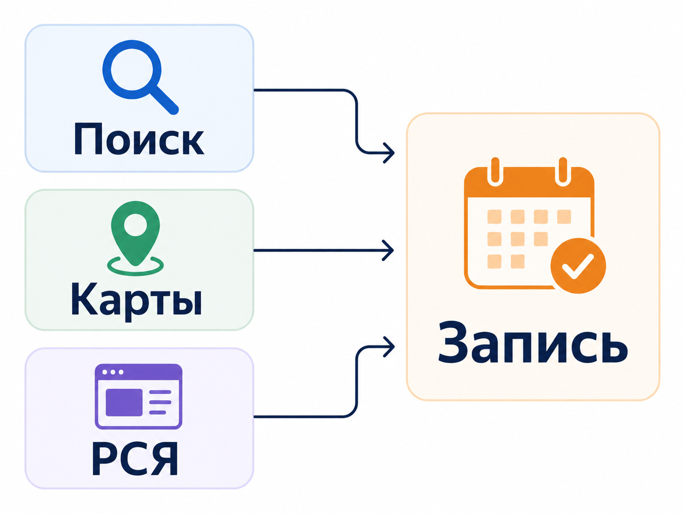
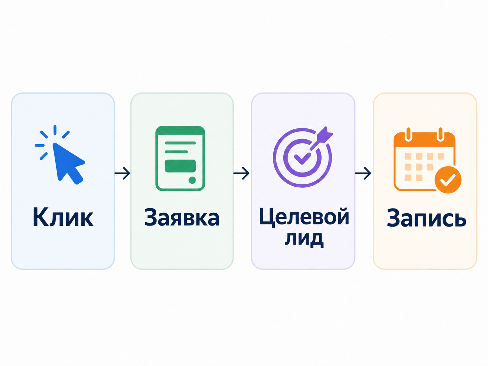

Блог о платном трафике
Реклама психологического центра: как получать заявки из Яндекс Директа и Карт
Реклама психологического центра лучше всего начинается со сформированного спроса. Человек уже ищет психолога, семейного специалиста, помощь ребенку или конкретный формат работы, а задача рекламы - привести его на страницу, которая соответствует запросу и помогает выбрать специалиста.
Для локального центра я бы в первую очередь рассматривал связку из Поиска Яндекса и Яндекс Карт. РСЯ может дать дополнительный охват, но в психологической тематике есть ограничения, связанные с деликатным характером части услуг. Поэтому стандартная схема "запустить ретаргетинг на всех посетителей и добавить интересы" здесь подходит не всегда.
Какие каналы подходят психологическому центру
Обычно я разделяю каналы по задаче.
Поиск Яндекса - получать обращения от людей, которые уже ищут психолога или центр.
Яндекс Карты - работать с локальным спросом, отзывами, рейтингом и близостью центра.
РСЯ - расширять охват там, где это допускают правила показа.
SEO - постепенно получать бесплатный поисковый трафик по услугам и информационным запросам.
Telegram и другие площадки - работать с контентом, подпиской и дополнительным прогревом аудитории.
Для психологического центра с физическим адресом особенно важны Карты. Человек часто сравнивает несколько вариантов, смотрит расположение, фотографии, рейтинг, отзывы и график работы.
Чем отличается Яндекс Бизнес от Яндекс Директа.

Разделяйте рекламу по услугам и запросам
Одна из главных ошибок - рекламировать весь центр одной группой объявлений с формулировкой вроде "Психологическая помощь для взрослых и детей".
Потребности у аудитории разные. Например:
- семейный психолог;
- детский психолог;
- подростковый психолог;
- индивидуальная работа со взрослым;
- семейные консультации;
- диагностика;
- работа с родителями;
- групповые программы.
Необязательно создавать десятки рекламных кампаний. Но объявления и посадочные страницы должны учитывать различия между основными направлениями.
Если человек ищет детского психолога, ему желательно сразу показать специалистов, которые работают с детьми, подходящий формат приема, возраст клиентов, стоимость и возможность записи. Отправлять его на общую главную страницу центра, где нужно самостоятельно искать нужное направление, хуже.
Реклама психологического центра на Поиске Яндекса
Поиск работает с наиболее понятным намерением пользователя. Человек сам сообщает системе, что ему требуется.
Например, спрос может формироваться вокруг запросов:
- психологический центр;
- психолог рядом;
- семейный психолог;
- детский психолог;
- консультация психолога;
- психолог для подростка;
- запись к психологу.
Дополнительно появляются запросы по конкретным ситуациям и направлениям работы.
Собирать тысячи искусственно разделенных ключевых фраз сегодня необязательно. В Яндекс Директе вместе с ними работают автотаргетинг, содержание объявления и посадочной страницы. Но реальные поисковые запросы после запуска все равно нужно регулярно проверять.
Как настроить рекламу в Яндекс Директ.
Нецелевой спрос нужно отсекать
У психологической тематики много информационных запросов. Пользователь может искать тест, книгу, обучение, вакансию психолога, бесплатные материалы или определение термина, а не запись в центр.
Поэтому после запуска я смотрю не только на подготовленные ключевые слова, но и на реальные фразы, по которым происходили показы и переходы.
Минус-фразы добавляются по фактическому трафику. Слишком широкий список исключений до запуска тоже может отрезать полезный спрос.
РСЯ для психологического центра работает с ограничениями
С психологической тематикой есть особенность, которую нельзя игнорировать.
Яндекс относит часть рекламы, связанной с личными трудностями, психическими расстройствами, зависимостями и психологической поддержкой, к деликатным темам. Для таких объявлений не используется поведенческий таргетинг, ретаргетинг и подбор аудитории в сетях. Показы могут оставаться доступными на Поиске и по тематическому соответствию страницы.
Это означает, что нельзя заранее строить всю стратегию психологического центра вокруг идеи: "соберем посетителей сайта, а потом будем несколько недель догонять их баннерами".
Конкретные ограничения зависят от содержания рекламы и от того, к какой категории ее отнесет модерация.
Яндекс Карты особенно важны для офлайн-центра
Если специалисты принимают клиентов очно, карточка организации становится отдельной частью воронки.
Я бы проверил:
- правильность адреса;
- режим работы;
- номер телефона;
- список услуг;
- фотографии помещения;
- фотографии специалистов;
- актуальные цены, если они публикуются;
- возможность быстро перейти к записи;
- отзывы и ответы организации на них.
Для локального бизнеса Яндекс Бизнес и Директ не заменяют друг друга. Карточка помогает человеку выбрать организацию рядом, а Директ позволяет активнее работать со сформированным спросом и вести пользователя на нужную страницу.
Что должно быть на сайте психологического центра
В этой нише одной рекламной настройки недостаточно. Человек выбирает специалиста, которому предстоит рассказывать личные вещи, поэтому сайт должен быстро отвечать на вопросы и снижать неопределенность.
На странице конкретной услуги полезно показать:
- с какими запросами работает направление;
- специалистов центра;
- образование и квалификацию;
- используемые подходы;
- формат работы;
- продолжительность приема;
- стоимость;
- адрес или формат онлайн-встречи;
- расписание или способ записи;
- понятную форму обращения.
Фотографии реальных специалистов обычно полезнее обезличенных стоковых изображений.
Форму заявки я бы тоже не перегружал. Для первого контакта достаточно данных, которые действительно нужны администратору, чтобы связаться с человеком и помочь подобрать специалиста.
Не обещайте гарантированный психологический результат
Формулировки вроде "избавим от тревоги навсегда", "гарантированно решим проблему за три сеанса" или ссылки на конкретные случаи излечения особенно рискованны, если центр оказывает медицинские услуги.
Яндекс отдельно запрещает в медицинской рекламе утверждения о полной безвредности услуги и ссылки на конкретные случаи излечения или улучшения здоровья.
В рекламе психологического центра я бы делал акцент на другом:
- специализации;
- квалификации;
- формате работы;
- возможности выбрать специалиста;
- расположении центра;
- понятной записи;
- стоимости, если она является конкурентным преимуществом.
Когда для рекламы потребуется медицинская лицензия
Сначала нужно определить, какие именно услуги оказывает организация.
Если речь идет о медицинской деятельности и сайт позиционирует услуги как медицинские, действуют отдельные правила модерации Яндекс Директа. Для размещения в России Яндекс может запросить копию лицензии и приложения к ней. Адрес оказания услуг и юридическое наименование должны соответствовать информации на сайте.
Для текстовых медицинских объявлений Яндекс автоматически добавляет обязательное предупреждение. В некоторых графических и видеоформатах предупреждение требуется размещать в самом рекламном материале.
Если центр оказывает обычные немедицинские психологические услуги, требования могут отличаться. Поэтому перед запуском нельзя автоматически считать любой психологический центр медицинской организацией или, наоборот, игнорировать медицинский статус услуг.
Аналитика важнее количества "конверсий" в кабинете
В рекламе психологического центра я бы считал основной конверсией реальное обращение:
- отправленную форму;
- успешно завершенный квиз;
- звонок;
- подтвержденную запись;
- другое действие, после которого администратор действительно получает потенциального клиента.
Клик по кнопке или открытие страницы еще не являются заявкой.
Это особенно важно для автоматических стратегий. Если алгоритму передать простую цель, которая выполняется постоянно, он может хорошо оптимизироваться именно под нее. В рекламном кабинете будет много конверсий, но количество записей в центр от этого не увеличится.
Стоимость заявки удобно контролировать через CPA.

Реальный кейс рекламы центра психологии
У меня был проект центра психологии в Липецке. До начала работы рекламный кабинет был сильно раздроблен, использовалось много кампаний, а корректно оценить результат было сложно.
На предыдущем этапе реклама израсходовала около 71 000 ₽, при этом в качестве конверсий учитывались автоматические цели, в том числе нажатия на элементы сайта. Реальное количество заявок по этим данным было непонятно.
Я перенастроил аналитику на фактическую отправку формы и завершение квиза. Из-за ограниченного бюджета на первом этапе оставил Поиск - то есть наиболее горячую часть спроса. Затем проработал семантику и нецелевые запросы.
При расходе около 15 000 ₽ получили 22 обращения. Средняя стоимость лида оказалась ниже 700 ₽.
Кейс центра психологии в Липецке.
Этот пример хорошо показывает, что проблема рекламы может находиться не в количестве настроек. Иногда сначала нужно убрать лишнюю сложность, настроить нормальную аналитику и сосредоточить бюджет на самом понятном спросе.
В смежной медицинской тематике у меня также есть кейс медицинского сервиса доктора Дзидзарии, где стоимость лида удалось снизить примерно в два раза.

Какие показатели смотреть после запуска
Я бы не оценивал рекламу психологического центра по CTR или количеству кликов.
Основная цепочка выглядит так:
расход -> обращения -> целевые обращения -> записи -> состоявшиеся приемы
Первый показатель нужен рекламному кабинету. Последние четыре нужны бизнесу.
Например, две кампании могут давать одинаковый CPL, но из одной люди регулярно записываются на прием, а из другой большая часть обращений оказывается нецелевой.
Поэтому хотя бы статусы "целевой" и "нецелевой" желательно возвращать из отдела обработки заявок специалисту по рекламе.
Сколько должна стоить реклама психологического центра
Универсальной нормы нет.
Стоимость зависит от:
- региона;
- конкуренции;
- направления психологии;
- стоимости приема;
- конверсии сайта;
- качества специалистов и предложения;
- рекламного канала;
- того, какая доля заявок превращается в реальные записи.
Я бы начинал расчет не со средней цены лида по рынку, а с экономики самого центра.
Если известна допустимая стоимость нового клиента и конверсия из обращения в запись, можно определить, сколько бизнес способен платить за заявку. После запуска прогноз заменяется реальными данными.
Частые ошибки в рекламе психологического центра
Оптимизация по кликам на кнопки.
В статистике много конверсий, но они не означают реальные обращения.
Одна страница под все услуги.
Детский психолог, семейная терапия и индивидуальная работа требуют разных аргументов.
Запуск большого количества кампаний при маленьком бюджете.
Данные распределяются между множеством сегментов, а ни один из них не получает достаточной статистики.
Попытка агрессивно использовать ретаргетинг.
Для части психологической тематики действуют ограничения на персонализированные показы.
Слабая карточка в Яндекс Картах.
Для локального центра человек может выбрать конкурента еще до перехода на сайт.
Медицинские обещания в рекламе.
Если организация оказывает медицинские услуги, объявления и посадочная должны учитывать специальные требования законодательства и Яндекса.
Оценка рекламы только по CPL.
Дешевая заявка бесполезна, если она не превращается в запись.
Что в итоге
Для рекламы психологического центра я бы начинал со сформированного спроса: Поиск Яндекса, корректная аналитика и нормальная посадочная страница под основные услуги. Для центра с очным приемом параллельно нужно заниматься карточкой в Яндекс Картах.
РСЯ может расширять охват, но психологическая тематика требует учитывать ограничения Яндекса на деликатную рекламу. Если организация оказывает медицинские услуги, дополнительно появляются требования к документам и рекламным материалам.
Главная задача настройки - не получить как можно больше кликов или формальных конверсий, а выстроить понятную цепочку от рекламного расхода до реальной записи клиента.
Иллюстрации:
1. После раздела «Какие каналы подходят психологическому центру».
Alt: «Каналы рекламы психологического центра в Яндексе».
2. После раздела «Аналитика важнее количества конверсий».
Alt: «Воронка рекламы психологического центра от клика до записи».
3. После раздела с кейсом центра психологии.
Alt: «Результаты рекламы центра психологии в Яндекс Директе».